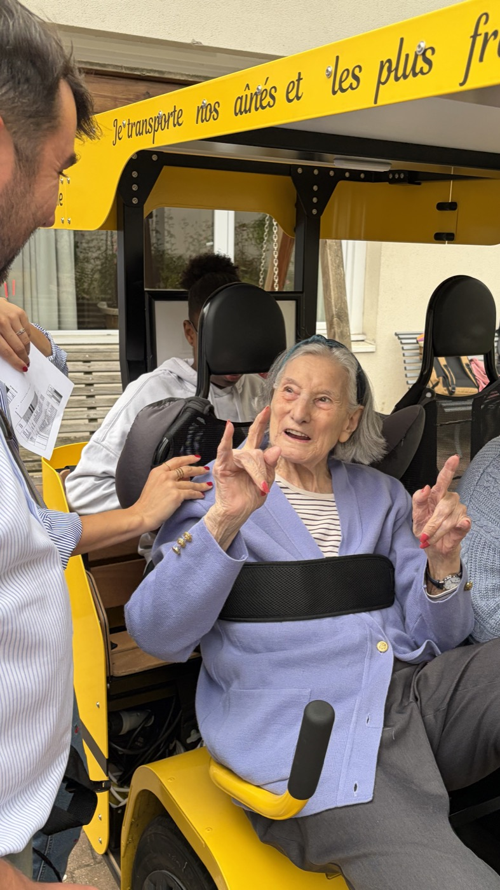

1.
Cyclothérapie
Une forme d'activité physique adaptée. Un maintien dans l'autonomie et du renforcement musculaire à bord d'un vélo collectif, pensé pour les publics fragiles. Parmi d'autres paramètres, le tonus musculaire des bénéficiaires est mesuré et documenté. Les Roues Solidaires sont un vrai outil de soin.
